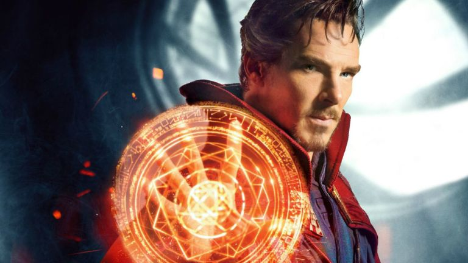

Doctor Strange

My hero, and true inspiration, is Doctor Stephen Strange. Since the launch of his first movie in 2016, I have idolized the man many know as the "Sorcerer Supreme". Strange was born and bred in New York City, the same place where he would eventually master the mystic arts. Prior to Doctor Strange's introduction to magic in Taj Mahal, he was a brilliant--yet extraordinarily arrogant--neurosurgeon. After a car crash left him with devastating injuries and an inability to return to his line of work, Strange began a desperate pursuit to heal himself--in any way possible... Years later, Doctor Strange wields the time stone, one of six infinity stones, and together with the likeness of the Avengers and other-worldly entities, he defeats Thanos, a interdimensional warlord.
On a brighter note, the reason that I chose Doctor Strange as my hero goes far beyond it's literal sense; before he became one of the most powerful beings in the universe, Doctor Strange was an esteemed neurosurgeon who saved hundreds of lives in the medical bay. Someday I also aspire to go into the medical field, and potentially even become a neurosurgeon or an anesthesiologist. On the other hand, Doctor Strange is my favorite superhero because his abilities are so unique and powerful when compared to fellow Avengers. As Samuel L. Jackson once said, "[Doctor Strange] is one bad mf." Not only did Doctor Strange accomplish the unachievable as a superhero, but he became what all aspiring young medical students dream to be--the absolute best in the field.
To return to the homepage, click here. To learn more about Doctor Strange, click here.